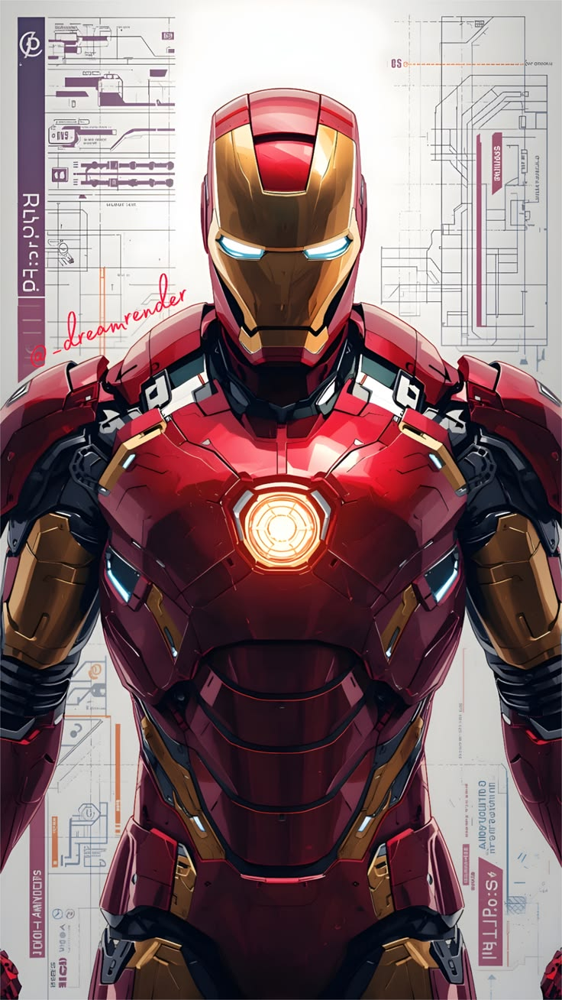
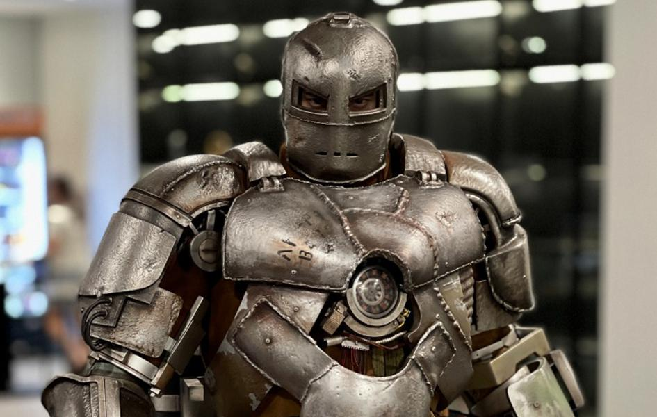
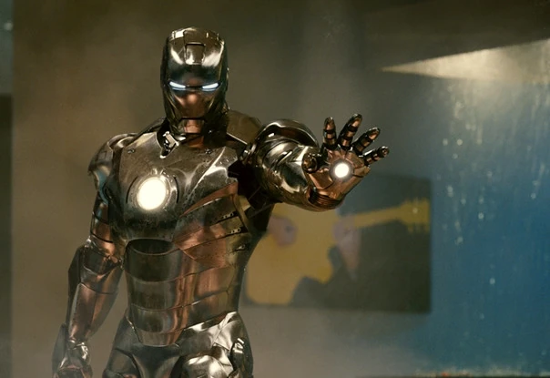
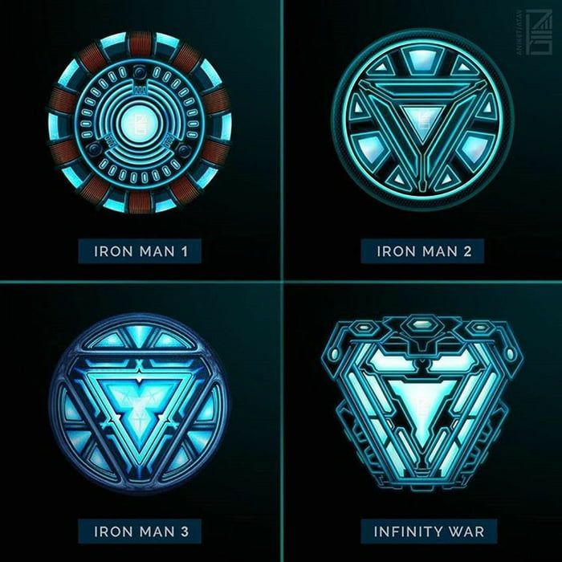
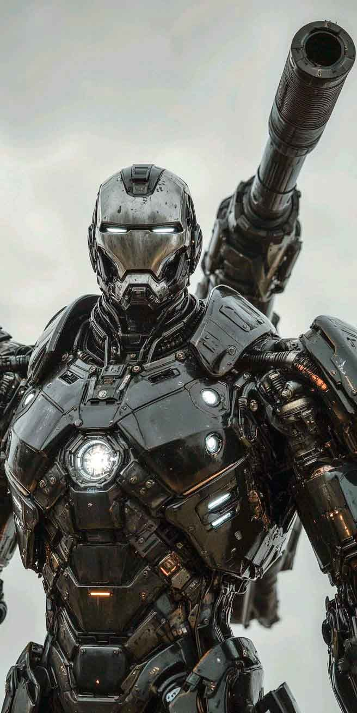
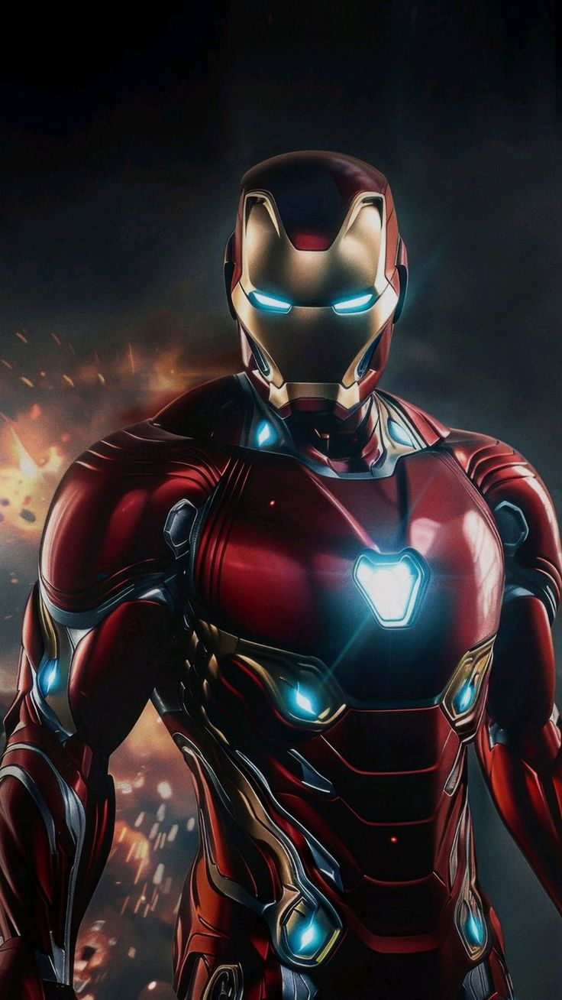
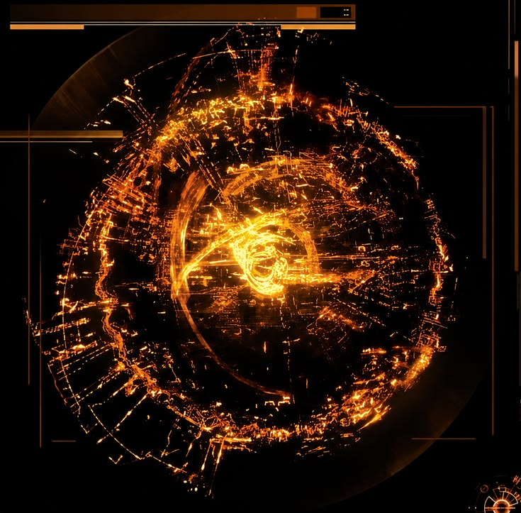

A Genialidade de um Super-Herói.


A genialidade de Tony Stark na criação de suas armaduras.
Tony Stark é reconhecido por sua inteligência extraordinária e capacidade de transformar ideias complexas em invenções revolucionárias. Sua genialidade permitiu que ele desenvolvesse tecnologias muito além de sua época, utilizando conhecimentos de engenharia, física e computação para criar suas armaduras.
A criação da primeira armadura, ainda em uma caverna, demonstrou sua capacidade de inovar mesmo diante das piores dificuldades. Com poucos recursos e materiais improvisados, Tony conseguiu construir uma máquina capaz de protegê-lo e ajudá-lo a escapar do cativeiro.
Com o passar do tempo, suas armaduras evoluíram significativamente. Cada novo modelo apresentava melhorias em resistência, mobilidade, armamentos e inteligência artificial, tornando suas criações cada vez mais avançadas e eficientes.
Um dos maiores exemplos de sua genialidade foi o desenvolvimento de sistemas capazes de controlar as armaduras por comandos de voz e inteligência artificial, como J.A.R.V.I.S. e, posteriormente, F.R.I.D.A.Y. Essas tecnologias permitiram que Tony tivesse maior controle e precisão durante suas missões.
Sua criatividade também o levou a desenvolver armaduras especializadas para diferentes situações, incluindo modelos preparados para enfrentar inimigos extremamente poderosos. Entre suas maiores conquistas estão as armaduras nanotecnológicas, capazes de se formar e se adaptar diretamente ao seu corpo.
Mais do que criar máquinas de combate, Tony Stark demonstrou que a inteligência, a criatividade e a determinação podem transformar completamente a tecnologia. Sua genialidade fez dele um dos maiores inventores do universo Marvel, deixando um legado que marcou a história dos Vingadores.

Mark I
A primeira armadura de Tony Stark foi construída dentro de uma caverna, utilizando peças improvisadas e materiais limitados. Apesar de seu visual bruto e pesado, possuía grande resistência e permitiu que Tony escapasse do cativeiro.

Mark II
Desenvolvida após seu retorno para casa, a Mark II apresentou um design mais moderno, com estrutura metálica prateada, maior mobilidade e capacidade de voo. Foi a primeira grande evolução tecnológica de sua armadura.
Mark III
A Mark III marcou uma nova fase, trazendo o icônico visual vermelho e dourado. Com melhorias na resistência, nos sistemas de voo e nos armamentos, tornou-se a primeira armadura de combate completa do Homem de Ferro.

Reatores Arc
Os reatores ARC são fontes de energia desenvolvidas por Tony Stark, capazes de fornecer uma enorme quantidade de energia em um dispositivo compacto. Inicialmente criados para manter estilhaços longe de seu coração, eles se tornaram essenciais para alimentar suas armaduras, permitindo o funcionamento de seus sistemas, armas e tecnologias.

Máquina de Combate
A Máquina de Combate é uma armadura desenvolvida a partir da tecnologia de Tony Stark e utilizada por James Rhodes, seu grande amigo. Equipada com armas pesadas, metralhadoras e sistemas de combate avançados, ela foi criada para atuar em missões militares, tornando-se uma das armaduras mais poderosas do universo Marvel.

Nanotecnologia
A armadura de nanotecnologia representa uma das maiores evoluções tecnológicas de Stark. Utilizando nanorrobôs armazenados em seu reator ARC, ela consegue se formar ao redor de seu corpo em poucos segundos, criando armas, escudos e diferentes equipamentos durante o combate, oferecendo maior versatilidade e proteção.

J.A.R.V.I.S,
JARVIS é uma inteligência artificial criada por Tony Stark para auxiliar no controle de suas tecnologias e armaduras. Extremamente avançado, ele é responsável por analisar informações, executar comandos, monitorar sistemas e ajudar Tony durante os combates. Com sua inteligência e eficiência, tornou-se um dos principais aliados do Homem de Ferro.